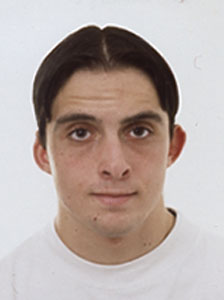

Daniel Hoyos Chamorro
Daniel Hoyos Chamorro 

This page is within a frameset. View the entire genealogy report of Hoyos Chamorro families, or surname index of Hoyos Chamorro pedigrees or report summary of Hoyos Chamorro heritage from "Árbol Genealógico de Manolo y Amalia".
Introduction About Genealogy.
© 2006 GenoPro Inc. All Rights Reserved.